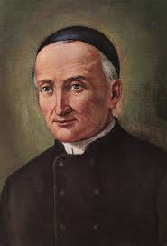
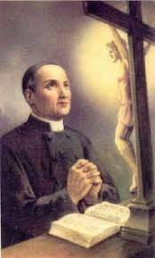
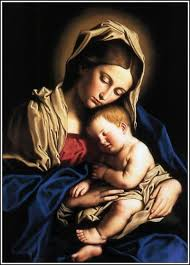
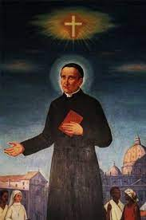
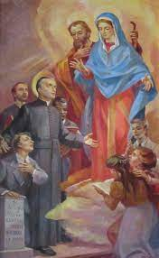
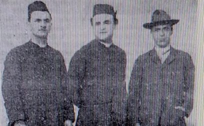

“A CONGREGAÇÃO,”
“VITORIA DO AMOR”

A NOVA CONGREGAÇÃO
O ambiente de trabalho, depois de restaurada e aberta a Igreja ao público, tornou-se super movimentado, inclusive ocupando espaços que eram para acomodações dos membros da Congregação. O movimento em todos os setores era tão apreciável, que na Escola da Congregação, em 1823, chegou a funcionar com cerca de 130 alunos. Foi então que o Padre Brugnoli projetou a construção de uma parte do Convento somente para a habitação dos Padres. E assim, depois de concluídas as obras, os alunos puderam dispor de mais salas e de espaços mais amplos para todas as suas atividades. A paixão pelos jovens estimulava as iniciativas do Padre Gaspar, que também decidiu instituir, a convite do Pároco da Igreja de São Francisco de Assis, no prédio dos Estigmas, um Oratório Mariano, que se tornou para os outros Oratórios da Diocese, um ponto de referência constante: “todos os domingos pela manhã, após a Santa Missa, acontecia o catecismo e outras práticas de piedade com grande participação”.
E a Congregação continuou crescendo: no dia 25 de Julho de 1824, com 8 anos de existência, veio juntar-se a eles o Padre Modesto Cainer. Homem trabalhador e com grande fé, que seguiu firme o exemplo e o caminho dedicado que os demais Sacerdotes da Congregação trilhavam.
A DOENÇA VOLTOU A SE MANIFESTAR
No ano de 1818, Padre Gaspar ficou gravemente enfermo. A preocupação foi geral, dentro e fora do Convento, tanto entre o povo humilde como nas altas rodas de Verona. Todos rezavam, até mesmo com preces comunitárias e públicas, suplicando a bondade Divina para curá-lo. Desta vez a doença atacou também o Padre Luís Bragato, que era o jovem sacerdote predileto do Padre Gaspar, que, para se tratar convenientemente, teve de abandonar o Convento, mesmo que temporariamente.

E na verdade, os sofrimentos do Padre Gaspar jamais foram vistos como se tratasse de um castigo celeste, ao contrário, foram sem dúvida uma preciosa cruz, que há seu tempo iria produzir especiais frutos conforme a magnânima vontade infinita do PAI ETERNO. Juntamente com longos períodos de imobilidade absoluta, alternavam-se momentos em que ele podia parcialmente retomar as suas atividades, embora em pequenas etapas. E assim, aos poucos ele continuou o trabalho que carinhosamente realizava para DEUS.
Em Maio de 1826, Padre Gaspar escreveu em uma carta: “Estou de novo preso ao leito. DEUS seja bendito! ELE me quer ferido, não morto, para que eu possa servi-lo e fazer a penitência que me é necessária”. Mas a doença parecia não mais abandoná-lo. Em Maio de 1827, escrevia: “O SENHOR me mantém no leito debaixo de ferros e bisturis. Bendito seja! Basta-me que ELE seja servido!” No final daquele ano parecia que toda esperança estivesse perdida. A cidade de Verona mobilizou-se para pedir a DEUS a graça da cura. E a graça veio. Em Fevereiro de 1828, com seus 51 anos de idade, Padre Gaspar começou a deixar o leito. Depois de onze meses, teve a alegria de voltar a celebrar a Santa Missa. A convalescença foi longa. Durante todo aquele ano ficou preso muitas vezes ao leito, mas no final, embora a saúde continuasse sempre delicada, pode retornar ao trabalho.
O TIFO SE ESPALHOU EM VERONA

Mas foi uma época ingrata, porque o Tifo estava maltratando os habitantes da cidade, e em consequência apareceram os primeiros mártires da caridade. Naquela época não existia Vacina contra o Tifo. Padre Gaspar incumbiu o Padre Mateus Farinati de atender espiritualmente as pessoas atingidas, apesar do perigo do contágio. Padre Farinati obedeceu e pôs mãos à obra. Adoeceu também. Para recuperar-se, teve que se afastar da Congregação e respirar ares melhores em sua aldeia natal em Alcenago, e nas risonhas colinas de Valpantena. Entretanto, não resistindo à enfermidade, faleceu no dia 17 de Setembro de 1820. Foi o primeiro mártir da caridade no pleno exercício de apostolado e amor fraterno.
Mais tarde, em 1842, os Estigmas tiveram que chorar, no espaço de três semanas, a morte de dois outros membros mais jovens. No dia 17 de Fevereiro faleceu santamente Padre Luís Biadego, de 34 anos de idade. Ele era a pessoa mais mística dos Estigmas, todos os seus pensamentos eram para DEUS, para NOSSA SENHORA e SÃO JOSÉ e para o maravilhoso Paraíso Divino. Habituado que estava a servir aos doentes da comunidade, particularmente o Padre Gaspar, durante a sua própria enfermidade sentiu-se confuso, ao ver rodeado de tantas atenções e cuidados. Numa de suas visitas, Padre Gaspar recordou-lhe as palavras de São Paulo: “Pois ninguém de nós vive e ninguém morre para si mesmo, porque se vivemos é para o SENHOR que vivemos, e se morremos é para o SENHOR que morremos. Portanto, quer vivamos, quer morramos, pertencemos ao SENHOR”. (Rm 14,7-8) Era a espiritualidade de confiante abandono em DEUS.
A ÚLTIMA ENFERMIDADE DE PADRE GASPAR

Nos últimos dias de vida, não estava em condições de tomar nada: só algum pedacinho de gelo para aliviar o ardor da febre. O único alimento verdadeiro que recebeu nas últimas semanas de vida, foi a Eucaristia, o mais forte alimento espiritual. Apesar da extrema debilitação do corpo, como consequência da doença e da falta de alimentação a que estava obrigado, sua mente conservou-se lúcida, praticamente até o fim dos seus dias. DEUS recompensou a sua piedade e grande paciência antes da morte. De umas expressões suas dirigidas ao Irmão Coadjutor que o assistia, pode-se concluir que ele teve uma visão celeste. Não era delírio nem auto-sugestão: Padre Gaspar, nem mesmo chegou a perder a lucidez mental nos momentos mais agudos da doença. Portanto, o que teve foi realmente uma visão, que DEUS lhe concedeu para fortalecê-lo ainda mais nos duros transes por que ia passar, à medida que se aproximava o término da sua vida.
MORTE DO PADRE GASPAR

Na manhã de domingo, 12 de Junho de 1853, Padre Gaspar devotamente, como de costume, recebeu a Santa Eucaristia. Isto, em perfeito jejum, por sua vontade. Nem mesmo água admitiu tomar, apesar da febre e da fraqueza, tal era a veneração que prestava ao Santíssimo Sacramento. Permaneceu conversando com JESUS, presente em sua alma. Depois, as forças foram diminuindo, e ele caiu num desfalecimento profundo. O rosto tornou se pálido e banhado de suor frio. A fraqueza era tanta que nem gemia, nem mesmo pedia mudança de posição. É que a morte se aproximava. Após o meio-dia, perdeu os sentidos. Mas, atendido imediatamente, voltou a si e agradeceu aos filhos a bondade e amor que lhe dedicavam. “Padre" - perguntou-lhe um irmão - "O senhor precisa de alguma coisa?” “Preciso sofrer”, respondeu. Palavras audaciosas, que só um grande amor a DEUS pode explicar! Depois, confessou-se com o Padre Marani, o primogênito da congregação. Recebeu a Unção dos Enfermos, também a benção papal com a indulgência plenária, própria dos moribundos. Enquanto isso, os sinos da Igreja dos Estigmas tocavam pausadamente badaladas compungidas, para avisar ao povo que Padre Gaspar agonizava. Padre Brugnoli rezava as orações do Ritual. Não podia sair! Afinal, era ele quem fazia às vezes de Superior da Comunidade. De repente interrompeu as orações exclamando: “Ele morreu”. Sua morte foi tão serena que ele foi para DEUS sem dar nenhum sinal que chamasse a atenção. Foi para o céu como tinha vivido: OCULTAMENTE. Até parece que sua humildade apelou uma última vez para a Providência Divina, tal qual tinha apelado em todos os instantes da sua vida. Faleceu santamente às 15h30 do domingo dia 12 de Junho de 1853.
“CONGREGAÇÃO DOS SAGRADOS ESTIGMAS DE NOSSO SENHOR JESUS CRISTO”
A Congregação desejada por NOSSO SENHOR e fundada pelo Padre Gaspar Bertoni, foi corajosamente implantada e abençoada pelo seu Fundador, cresceu e se difundiu gradualmente pelo mundo, instalando em diversas cidades da Itália, nos Estados Unidos, no Brasil (onde conta, atualmente, com seis bispos), no Chile e nas Filipinas também tem Casa. Na África do Sul, na Costa do Marfim, na Tailândia e na Tanzânia, a Congregação possui Missões. Popularmente o Instituto Religioso é também conhecido como “CONGREGAÇÃO DOS ESTIGMATINOS”.
BEATIFICAÇÃO E CANONIZAÇÃO
Padre Gaspar Bertoni foi “BEATIFICADO” no dia 1º de Novembro de 1975, pelo Papa Paulo VI, na Basílica de São Pedro no Vaticano. Foi “CANONIZADO” pelo Papa João Paulo II, na Basílica de São Pedro no Vaticano, no dia 1º de Novembro de 1989, no Dia de Todos os Santos. Sua Festa Litúrgica é celebrada todos os anos no dia 12 de Junho.

Esta foto é de três integrantes da Congregação, que vieram instalar uma Casa no Brasil. Da esquerda para a direita: Padre Alexandre Grizolli, Padre Henrique Adami e Irmão Domingos Valzacchi.